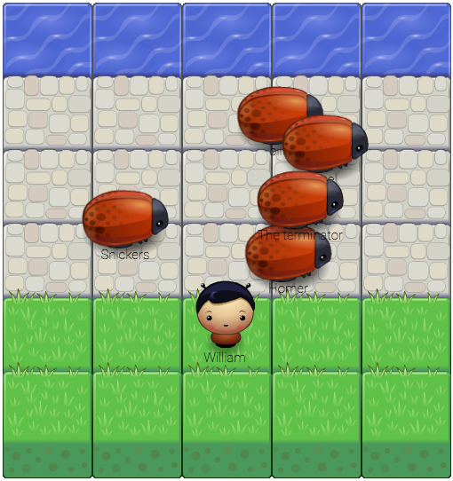

Classic Arcade Game Clone
Custom frogger Arcade is a variation of the classic Frogger arcade game developed by Konami and licensed for North American distribution by Sega-Gremlin and worldwide by Sega itself. It is regarded as a classic from the golden age of video arcade games, noted for its novel gameplay and theme. wiki/Frogger
The object of the game is simple, you must direct the hero character across the grey brick road, full of enemy bugs, towards the water without getting hit.
Your score is based on your current score + (level x 2) for each level you pass.
The enemy bugs run across the screen at random speeds in the x direction and random y locations given their constraints which is between the grey bricks.
The number of enemy bugs will increase by 1 until level 6 where an increase of 1 bug will be added to the total enemies each time you complete the level.
If you run into an enemy bug, you will reset, your level decreases by 1, your score decreases by 1 and the enemy you run into will disappear.
If you run into an enemy bug, you will reset, your level decreases by 1, your score decreases by 1 and the enemy you run into will disappear.
Users control the hero character by using the main keyboard keys: [ ← → ↑ ↓ ] arrow keys on their keyboard. There is no press down and hold option, you must press each key to move in that specific direction.
Download the GitHub zip file or clone the repository onto your local workstation:
To check out the game, navigate to the game.html file in your application's directory and double click to open in your browser.
http://www.w3schools.com/Tags/ref_canvas.asp
https://github.com/udacity/frontend-nanodegree-arcade-game
https://www.udacity.com/course/viewer#!/c-ud015/l-3072058665/m-3072588797/
Students should use this rubric for self-checking their submission. Make sure the functions you write are object-oriented - either class functions (like Player and Enemy) or class prototype functions such as Enemy.prototype.checkCollisions, and that the keyword 'this' is used appropriately within your class and class prototype functions to refer to the object the function is called upon. Also be sure that the readme.md file is updated with your instructions on both how to 1. Run and 2. Play your arcade game.
For detailed instructions on how to get started, check out this guide.